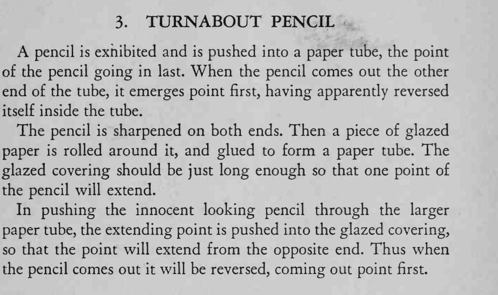

铅笔笔尖朝后推进纸筒，从另一头出来时却笔尖朝前，仿佛在筒里自己掉了个头。
纸套要卷紧但能让铅笔顺畅滑动；进筒和出筒时都用纸筒挡住动作。

A pencil is exhibited and is pushed into a paper tube, the point of the pencil going in last. When the pencil comes out the other end of the tube, it emerges point first, having apparently reversed itself inside the tube. The pencil is sharpened on both ends. Then a piece of glazed paper is rolled around it, and glued to form a paper tube. The glazed covering should be just long enough so that one point of the pencil will extend. In pushing the innocent looking pencil through the larger paper tube, the extending point is pushed into the glazed covering, so that the point will extend from the opposite end. Thus when the pencil comes out it will be reversed, coming out point first.